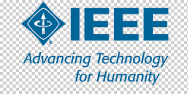

Smart Traffic Light Control with Emergency Vehicle Detection and Boom Barriers Using Arduino
🎯 Motivation
Over 40% of U.S. traffic accidents occur at intersections. Inspired by increasing fatalities in NYC, this IoT-based project introduces a smart traffic control system to prioritize emergency vehicles and reduce congestion.
⚙️ System Overview
The system uses dual Arduino controllers connected via XBEE protocol for wireless synchronization. Sensors detect sirens and density, dynamically adjusting lights. Boom barriers open automatically, with Bluetooth override support.
🏆 Achievements & Recognition 
As Lead Author, this $6,000 CUNY-funded research was presented at IEEE SUSTECE (California), ERN STEM (Atlanta), and multiple CUNY Research Symposiums. It received awards for Innovation and Technical Implementation and was later published in IEEE Proceedings (2024).
.jpeg)
💼 Other Projects
📊 Sales Data Dashboard
Developed an interactive Power BI dashboard to analyze sales, profit margins, and customer trends using CSV datasets. Added DAX measures for year-over-year growth visualization.
💾 ETL Data Pipeline (Python + SQL)
Built an end-to-end ETL process using Python and SQL. Extracted CSVs, transformed using Pandas, and loaded into PostgreSQL for analytics reporting.
💼 Business Expense Tracker
Created a Python and Excel-based tool to track daily expenses, generate monthly reports, and visualize spending using Matplotlib.
🌦 Weather Forecast App
Built a real-time web app using OpenWeather API, HTML, CSS, and JavaScript to display 7-day forecasts with location-based updates.
🧾 Student Grade Analyzer
Python-based analyzer using Pandas and Matplotlib to compute grade distributions and visualize academic performance trends.
🕹 Mini Arcade Game
Developed a JavaScript Canvas mini game with scoring, collisions, and dynamic difficulty scaling — introducing core game physics.